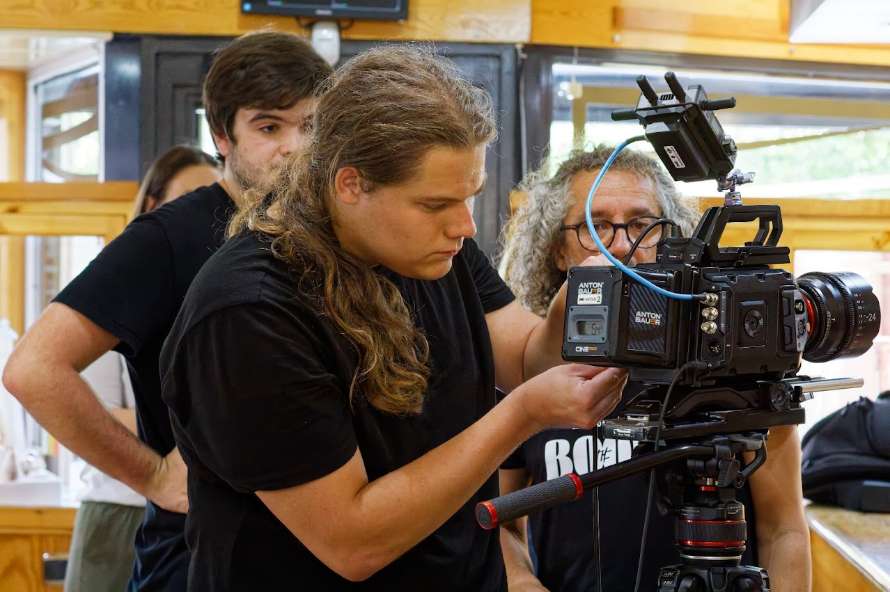
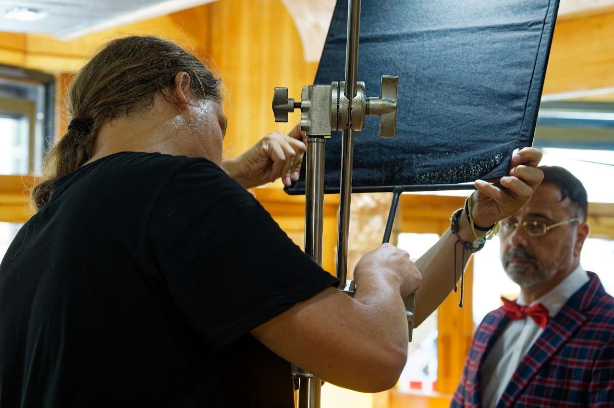
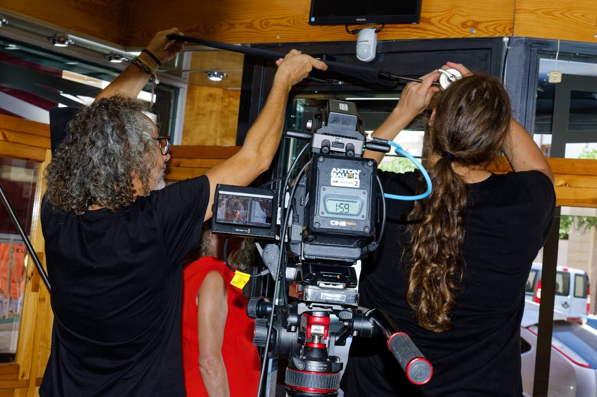
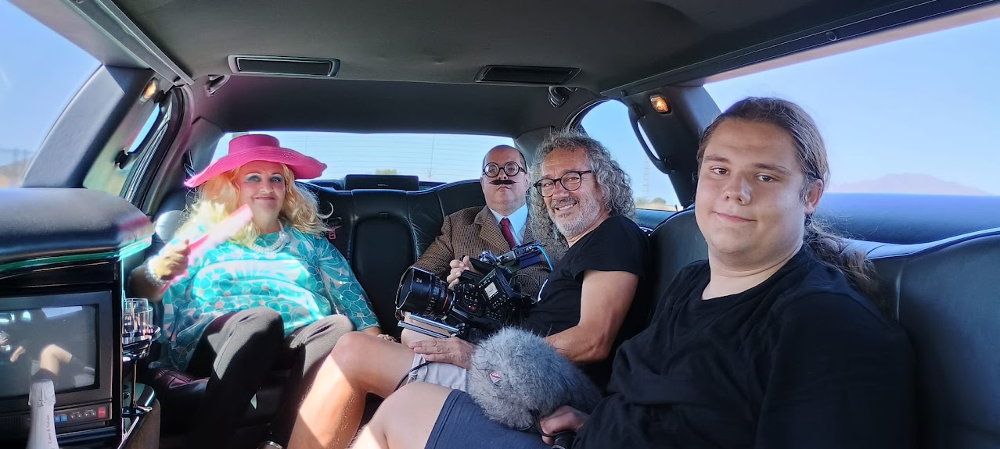

En set de rodajeEléctrico de Rodaje (Spark) & Técnico de Cámara para Ficción y Publicidad
Formado técnicamente en la productora Twin Freaks con certificación de la ESCAC. Especializado en diseño y montaje de esquemas de luz, gestión de fuentes LED y tungsteno, seguridad y distribución eléctrica de set, y riggeo de cámaras de cine de alta resolución.
Proyecto destacado de ficción cinematográfica con desglose técnico del trabajo de iluminación y cámara.
Fotografías reales del rodaje de 'El Bitcoin de Oro' demostrando operatividad en iluminación, banderas de recorte, cámara 12K y sonido directo.

Grip & IluminaciónAjuste de bandera de corte sólida para recortar contaminación lumínica y esculpir las sombras sobre los actores en escena.
Configuración del cuerpo cinematográfico con batería Anton Bauer Cine 150, ópticas de cine y emisor de señal inalámbrica de vídeo.

Rigging & AsistenciaMontaje de soporte cenital de iluminación y asistencia directa al operador de cámara en espacio de rodaje estrecho.

Sonido DirectoCaptación de sonido directo con microfonía protegida (deadcat) en rodaje de secuencia interior en limusina junto al equipo técnico y elenco.
Conocimiento práctico y fundamentado de los estándares técnicos exigidos en la industria cinematográfica y publicitaria.
Certificación oficial expedida por el Director de la ESCAC (centro adscrito a la Universitat de Barcelona) en colaboración con Cinemur. Formación especializada en tecnología de iluminación cinematográfica, distribución de cargas y potencias, fuentes modernas (LED, HMI, Tungsteno), montaje de grip seguro y dinámicas de rodaje profesional.
Formación universitaria iniciada en la UMU (1º y 2º cursos: 2024–2026) y cursando 3º curso (2026–2027) en la UGR mediante el programa nacional de movilidad SICUE.
Disponible como Eléctrico (Spark), Asistente de Cámara o Pertiguista. Base operativa en Granada con disponibilidad inmediata para viajar.